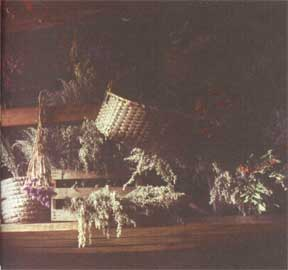

Natural Health
In recent years there has been a tremendous surge of interest in herbal or botanic medicine. In consequence, a wide variety of ready prepared natural remedies have found their way onto the shelves of herb suppliers, health-food stores, and even some chemists. While manufacturers are to be commended for presenting the public with an alternative to chemicals, it's important to remember that a lot of remedies can be made at home. While naturally treating what ails you may seem like hocus pocus, many wonderful cures are as common as what's found in your herb garden.
Collecting Medicinal Plants
No matter where you live, you will always be able to find plants that can be cultivated for their medicinal values. Of course, exactly what plants are available to you depends largely on your own geographical location. Where I live, one can find an almost endless variety of useful herbs, "weeds" (I detest that word), and shrubs. Even in quite heavily populated towns it is normally possible to find an inexhaustible supply of Dandelion, Groundsel, Chickweed, Coltsfoot, Dock, Plaintain, and Bindweed.
When collecting plants - especially those to be used for medicinal purposes - there are several golden rules to follow. Stick to them, and you can be sure that the plants you pick will be of the finest quality.
RULE 1 : Correctly identify the plant.
Some herbs are almost indistinguishable from others that have totally different properties. Rosebay Willowherb (Chamaenerion angustifolium) may, to the untrained eye, look suspiciously like Purple Loosestrife (Lythrum salicaria), and two members of the Figwort family Scrophulariaceae - Yellow Lute (Odontites lutea) and Common Cow-wheat (Melampyrum pratense) - may also be easily confused by someone who is gingerly taking their first herb-hunting expedition in the fields.
Always take several illustrated pocket books with you when you are looking for herbs that you are not overly familiar with.
RULE 2 : Never pick within one mile of a highway.
Some plants such as the Raspberry, Blackberry, Lesser Plaintain, Ground Ivy, and Self-Heal have a curious affinity for the lead thrown out by car-exhaust fumes. Plants picked by a busy roadside may contain up to 200 times their natural level of lead.
RULE 3 : Always pick from the correct area.
It is not by coincidence that you find a field covered with a golden carpet of Coltsfoot or a meadow dotted profusely with clumps of Plantain. If an herb is growing prolifically in a particular area, you can be sure that the soil is rich in the minerals and organic acids or alkalines that promote vigorous and healthy growth. Try to pick your herbs from areas such as these.
RULE 4 : Carefully choose the time you pick. Pick by mid-morning, when most of the dew has evaporated from the foliage (dew-laden herbs tend to develop mold soon after picking).
Once you have found the desired herb growing in a suitable area, it is most important that you select only the best specimens, and also that you defoliate the plant in the correct manner. Avoid plants that show any signs of damage or disease. Black spots on the leaves, discoloration of the stem, or droopy foliage are some of the tell-tale signs that all is not well.
Unless you require the root of the plant, it is rarely necessary to destroy the whole herb. The Chinese have an old custom of only picking the "dragon's ears" or top two leaves. Polish herbalists will always "leave some for God" - they'll leave the rootstock to flourish again. Both ideas are to be encouraged because they promote vigorous growth and ensure that the species population does not become depleted.
When removing the foliage, choose only tender young leaves that have a healthy appearance. Old leaves tend to be tough and battle-scarred due to exposure to harsh winters. Leaves from biennial plants should, when possible, be picked in their second years.
Flowerheads are particularly prone to damage, especially from marauding insects. The best time to pick flowerheads is in the early morning, but be sure to dry them at the first opportunity to prevent molding. Avoid blooms that are starting to lose their petals, as they are past their best.
Removing bark is perhaps the most delicate operation, because if it is removed in the wrong manner, the entire plant may die. Select the tree or shrub that you require, then, with a sharp blade or small hacksaw, carefully remove smaller branches from the top and outer areas of the plant. Bark is much more easily stripped from new stemmage and branches.
Do not attempt to remove bark from branches which are still attached to the tree - you may accidentally "run" the strip of bark down the trunk, and leave it open to infection from parasites, fungi, or disease.
The best time to pick flowerheads is
in the early morning, but be sure to
dry them quickly.
Once you have removed the parts of the plant that you require - the leaves, stem, root, bark, seeds, or flowerhead - store them in small cotton or muslin bags for transportation. Never mix two or more herbs in the same bag. You'd be amazed how two herbs that looked entirely different in the field can look confusingly similar on the kitchen bench!
Be careful not to crush or damage the leaves during transportation (a wire frame placed inside the collecting bag helps).
Having collected your herbs, it is important that you prepare them for storage as soon as possible. Every home herbalist has his or her own techniques and favorite methods of storing herbs, and some of them are quite simple. The most popular means of preserving herbs is by drying. In removing the moisture from the cellular structure of the plant, you trap the "active principles," or therapeutically useful chemicals, inside. Also, the plant is impervious to mold, disease, and other problems. Dried herbs can - depending on the species - be stored for up to five years with no loss of potency.
Basically, there are two methods of drying, both of which have certain advantages and disadvantages. The quicker - and more common - method is indoor oven drying. The other method, which some herbalists find preferable, is outdoor frame-drying.
Oven Drying: The main advantage of oven drying is the way in which it saves time. Herbs that would normally take up to six weeks to dry naturally can be dried within an hour indoors.
The herbs should be placed neatly, side by side, on a clean, dry oven tray. A piece of aluminum foil should be placed over the tray, with the reflective side facing in. The foil should then be nipped to the edges of the tray, leaving a small gap to allow moisture to escape.
Place the tray into the oven, which should be set on the lowest temperature (150F°). Remove the tray every 15 minutes and turn the herbs over to ensure that the moisture is drawn out evenly from all sides of the plant. If moisture is drawn out through one side more rapidly then the other, burning may occur. Do not allow plants to burn to a dark brown or black color. When this happens, the potency is destroyed completely and the plant is useless.
There are two disadvantages to oven drying. First, it is extremely easy to over-dry or burn the herbage. Remember, you are trying to dry the herb, not cook it. When the leaves or peals crumble gently in your hand without powdering, and some or all of the original color is intact, then the plant is dried sufficiently.
The second disadvantage of oven-drying is that, for various reasons, the herbs lose between 1/3 to 1/2 of their original potency, compared to their outdoor dried-equivalents which only lose around 1/4.
Frame Drying: Although this method is more time-consuming than oven drying, it is often preferred by experienced herbalists, as the loss of potency is somewhat less.
For frame-drying, you will need a small wooden or metal box about 3' square, with a glass lie. The base of the frame should be lined with aluminum foil, leaving a small, sheltered hole for ventilation. Herbs selected for drying should be placed on the aluminum foil, and then close the lid. The plants should be turned once a day until dry.
The frame should, of course, be situated in an area that receives a reasonable amount of sunlight. It should be absolutely watertight, and all herbs placed in it should be dried gently with a cloth first. One damp herb placed in the frame may be sufficient to turn the entire batch moldy. Frame drying may take anything between three to six weeks.
Having successfully dried your selected herbs, you must now consider by which method you wish to store them. This is largely determined by the eventual form in which the herb is to be administered. Ointments, for instance, are normally made from finely powdered herbs, while tinctures are usually made by submerging the whole root or leaves in alcohol. As a rough guide, I would suggest that the leaves, bark, and stem are best comminuted (ground), while root, petals, and seeds are best stored whole. Be sure that your herbs are thoroughly dried before storage.
Comminution: This can be done by the traditional method of using a mortar and pestle or by using an electric grinder. The first method, although slower, enables you to determine the eventual fineness of the powder with a great deal more accuracy. But when comminuting herbs for use in ointments or salves, an electric grinder gives a greater degree of fineness and uniformity.
Storage: This is probably the most important part of the whole procedure. Failure to store your herbs correctly means that all the time and effort spent collecting and drying has been wasted.
Choose carefully the room in which you will store your herbs. It should not be damp, cold, or drafty. Do not store in or near a kitchen, as cooking odors have been known to permeate the most "impermeable" of containers! I learned my lesson the hard way: I once opened a "sealed" container of Lemon Verbena - which normally has an extremely pleasant aroma - only to be greeted by the smell of stale cooking oil. That afternoon my herbs were moved to a cupboard away from the kitchen.
It also goes without saying that dried herbs should never be stored within reach of young children. Remember: They are potential medicines.
Your choice of container is equally important. Some types are totally unsuitable for the storage of dried herbs. Metal containers tend to impart a bitter, metallic flavor and odor to the plants and should never be used. Likewise, clear glass jars allow sunlight to filter through, and prolonged exposure to sunlight will inevitably lead to a loss of potency. Wooden containers can be used occasionally, but these are also prone to absorbing moisture.
Suitable containers can be ceramic, earthenware, brown glass, or plastic. Whichever type you use, make sure that they are intact and airtight. (Some herbalists find that a small amount of powdered chalk wrapped in tissue paper and placed in the container aids against dampness.)
Labeling: Failure to label jars correctly has been the downfall of many a would-be herbalist, because the consequences can, bluntly speaking, be fatal. Every container should display a firmly secured label bearing the following information:
The Date: After several years of storage, the potency of dried herbs may deteriorate severely. Make sure that you know the date on which the herbs were picked and dried. This will enable you to determine when your stock needs renewing.
The Name: Always write the Latin, botanical name of the herb on the label. Write the common name also for quick reference, but remember that these "nicknames" can be confusing.
The Method of Drying: As this affects the potency of the herb, it is vital that you contain this information on your label. A small sign such as + may be used to denote those herbs which have been oven dried, while a sign such as 0 can be used to identify frame dried herbs.
The Part of the Herb: Always note the part of the herb that you have stored. Comminuted roots, bark, and leaves can all look much the same, and as the various parts of a plant can have different medicinal virtues, it is important to know which is which.
In the plant kingdom, every species is, when found within its natural environment, in a perfect state of chemical balance. Indeed, if this balance - this symbiotic relationship with the external environment - did not exist, the plant could not survive. Unfortunately, this chemical balance is extremely delicate, and if the natural constituency of the plant is disturbed in any way that balance is destroyed.
Of course, the difficulty lies in administering a medicinal herb without destroying that precious balance. Defoliation, drying, heating, exposure to sunlight over a prolonged period after picking, and a host of other processes normally initiate the very thing that should be avoided at all costs - namely, a loss of potency. Logic tells us then that if a change in the plant's physiology or environment causes a loss of potency, the administration of the herb in its natural state (i.e. raw) must likewise ensure a maximum potency. It is for this reason that herbs should, technically speaking, be eaten raw in the same manner as a vegetable.
Consequently, it becomes obvious that the desired method of ingesting herbal material is also the least practicable. For this reason, herbalists over the centuries have developed alternative ways of giving medicines to patients, and no one can effectively use herbs for medicinal purposes without these methods.
Simply speaking, an extraction is any herbal medicine that has as its basis the extracted fluid or properties of a plant, but does not contain particles of the actual plant material itself. There are five major methods of producing extractions.
Infusions: Sometimes called tisanes, infusions are the quickest way of producing herbal medicines. To make a good infusion you will need:
1) A small pan. 2) A measuring jug, preferably glass. 3) A set of household scales. 4) A tea strainer. 5) One ounce of dried herb for every pint of medicine that you require
Equipment : The pan should be enamel (or iron). Never use copper or aluminum pans as they impart a bitter flavor to the herb, and small particles of these metals have been known to find their way into the human digestive system. A good measuring jug is a necessity. It should be constructed of heat-proof glass, but if this is not available, a good-quality "plus" polymer.
An accurate set of scales is necessary for measuring out quantities of the dried herb. (Always check that your scales are properly adjusted before you begin.)
The strainer serves a dual purpose. Not only does it carry out the obvious task of removing plant particles from the infusion, but it can also be used to increase the strength of the medicine.
Method : Pour one pint of cold water into a pan. Heat the water to boiling point, switch off the heat and wait for 30 seconds. Then sprinkle the herb into the water and stir. Never pour boiling water over the dried herb or add the herb directly to water that is still boiling, as this destroys the potency. Leave the plant material in the water for 10 minutes, giving the occasional stir. Pour the liquid through the strainer into the container. If a stronger tisane is required, re-pour the liquid through the plant particles in the strainer two or three times.
(Those who find the bitter taste of some infusions disagreeable can sweeten them with honey or brown sugar.)
Decoctions: The art of preparing a good decoction takes minutes to learn and years to master. Made correctly, they are potent medicines that need to be taken only in relatively small amounts. Made incorrectly, they are nothing short of useless.
Method: Take one ounce of the dried herb and place in a pan. Add one pint of cold water and bring to a boil. Turn down the heat and allow the liquid to simmer down to 1/4 of its original volume. The decoction should then be strained.
Decoctions are particularly valuable when making medicines from roots or bark, as their active principles cannot normally be drawn out in sufficient quantities simply by making an infusion.
Tinctures: (Sometimes called macerations.) Alcohol is much more effective than water for drawing out the medicinal properties of plants. Because of this, many herbalists soak fresh or dried herbs in alcohol for prolonged periods. The resultant mixture is an extremely potent medicine that need only be administered in small amounts.
Method: There are various methods used in the manufacture of tinctures, but the simplest way is to soak one ounce of the herb in one pint of alcohol for a period of eight weeks. The container should be shaken daily for the first four weeks.
CAUTION: Never use wood alcohol or methanol as this can be a deadly poison.
One of the greatest advantages of herbal medicine as a therapy is that it is - when administered correctly - completely safe. Unfortunately, some amateur herbalists have, in their sincere desire to publicize the beneficial qualities of plant medicines, fostered the totally erroneous idea that herbal medicines can be swallowed in a spirit of cavalier abandon without causing the slightest harm. This notion is both incorrect and dangerous.
Despite the fact that herbal preparations are far safer in general than orthodox medicines, they must still be used with discrimination. Some plants are extremely toxic and can cause serious poisoning or even death.
The golden rules of herbalism
1. Unless you are medically qualified to do so, never treat anything but minor ailments at home. Always seek professional advice for serious conditions.
2. Even minor ailments that fail to respond to home treatment should be given the benefit of expert advice.
3. Always check the dosage of a homemade herbal preparation before you take it. Only take large doses under medical supervision.
4. Never use any herb for medicinal purposes unless you have identified it correctly and are sure it is safe.
5. Finally, remember this golden rule of self-medication: If in doubt, don't!
|
 No matter where you live, you will always be able to find plants that can be cultivated for their medicinal values. Many wonderful cures are as common as what's found in your herb garden. |
Always remember to take several illustrated pocket books with you when you go looking for herbs thatyou are notoverly familiar with. |
|